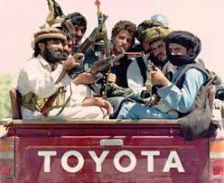
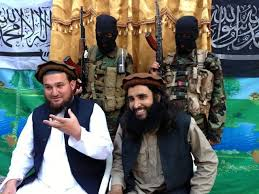
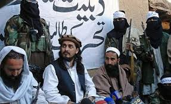
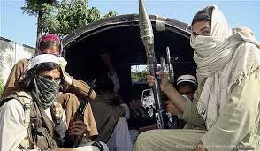
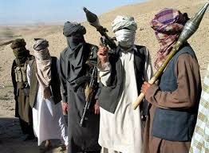
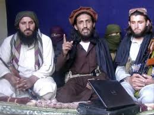

|
ORGANISATIONS OF TEHRIK-E-TALIBAN
|
|
TEHRIK-E-TALIBAN alternatively referred to as the Pakistani Taliban, is a terrorist group which is an umbrella organization of various Sunni Islamist militant groups based in the northwestern Federally Administered Tribal Areas along the Afghan border in Pakistan. Most, but not all, Pakistani Taliban groups coalesce under the TTP.In December 2007 about 13 groups united under the leadership of Baitullah Mehsud to form the Tehrik-i-Taliban Pakistan.Among the Tehrik-i-Taliban Pakistan's stated objectives are resistance against the Pakistani state, enforcement of their interpretation of sharia and a plan to unite against NATO-led forces in Afghanistan.
The TTP is not directly affiliated with the Afghan Taliban movement led by Akhtar Mansour, with both groups differing greatly in their histories, strategic goals and interests although they are both predominantly Pashtun.The Afghan Taliban, with the alleged support of Pakistani Taliban, operate against international coalition and Afghan security forces in Afghanistan but are strictly opposed to targeting the Pakistani state. The TTP in contrast has almost exclusively targeted elements of the Pakistani state although it took credit for the 2009 Camp Chapman attack and the 2010 Times Square car bombing attempt.
Maulana Fazlullah became the group's new leader in late 2013. In the following year the TTP fragmented into at least four groups, with the defections said to have left the group in considerable disarray.
The roots of the TTP as an organization began in 2002 when the Pakistani military conducted incursions into the tribal areas to originally combat foreign (Afghan, Arab and Central Asian) militants fleeing from the war in Afghanistan into the neighbouring tribal areas of Pakistan.A 2004 article by the BBC explains:
The military offensive had been part of the overall war against al-Qaeda. ... Since the start of the operation, the [Pakistani] military authorities have firmly established that a large number of Uzbek, Chechen and Arab militants were in the area. ... It was in July 2002 that Pakistani troops, for the first time in 55 years, entered the Tirah Valley in Khyber tribal agency. Soon they were in Shawal valley of North Waziristan, and later in South Waziristan. ... This was made possible after long negotiations with various tribes, who reluctantly agreed to allow the military's presence on the assurance that it would bring in funds and development work. But once the military action started in South Waziristan a number of Waziri sub-tribes took it as an attempt to subjugate them. Attempts to persuade them into handing over the foreign militants failed, and with an apparently mishandling by the authorities, the security campaign against suspected al-Qaeda militants turned into an undeclared war between the Pakistani military and the rebel tribesmen.
Many of the TTP's leaders are veterans of the fighting in Afghanistan and have supported the fight against the NATO-led International Security Assistance Force by providing soldiers, training, and logistics. In 2004 various tribal groups, as explained above, that would later form the TTP, effectively established their authority in the Federally Administered Tribal Areas (FATA) by concurrently engaging in military attacks and negotiating with Islamabad. By this time, the militants had killed around 200 rival tribal elders in the region to consolidate control.Several Pakistani analysts also cite the inception of U.S. missile strikes in the FATA as a catalyzing factor in the rise of tribal militancy in the area. More specifically they single out an October 2006 strike on a madrassah in Bajaur that was run by the Tehreek-e-Nafaz-e-Shariat-e-Mohammadi as a turning point.
In December 2007, the existence of the Tehrik-i-Taliban Pakistan was officially announced under the leadership of Baitullah Mehsud.
On 25 August 2008, Pakistan banned the group, froze its bank accounts and assets, and barred it from media appearances. The government also announced that bounties would be placed on prominent leaders of the TTP.
In late December 2008 and early January 2009, Mullah Omar sent a delegation, led by former Guantanamo Bay detainee Mullah Abdullah Zakir, to persuade leading members of the TTP to put aside differences and aid the Afghan Taliban in combating the American presence in Afghanistan. Baitullah Mehsud, Hafiz Gul Bahadur, and Maulavi Nazir agreed in February and formed the Shura Ittehadul Mujahideen (SIM), also transliterated as Shura Ittehad-ul-Mujahideen and translated into English as the Council of United Mujahedeen.In a written statement circulated in a one-page Urdu-language pamphlet, the three affirmed that they would put aside differences to fight American-led forces and reasserted their allegiance to Mullah Omar and Osama bin Laden. However, the SIM did not last very long and collapsed shortly after its announcement. |
|
|  |
 |
| |
Baitullah Mehsud |
|  |
 |
| |
|  |
Hakimullah Mehsud |
|  |
| |
Maulana Fazlullah |